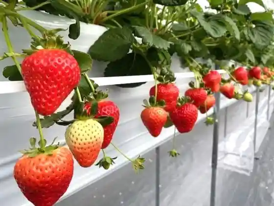
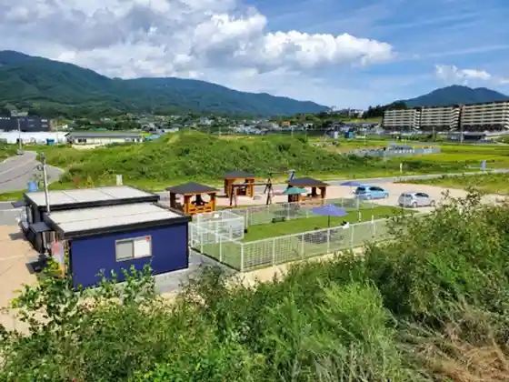
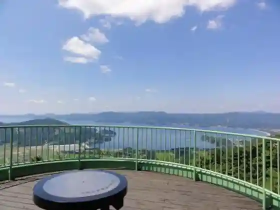
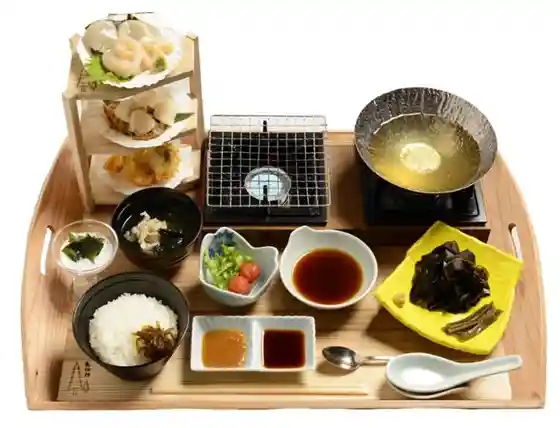

Ichigo Park
Rikuzentakata, Iwate · 0192-22-9700 · Official / source link

Daiwa Furutsu Park Kesen
Rikuzentakata, Iwate · 0192-22-7611 · Official / source link

Shimin Forest
Rikuzentakata, Iwate · 0192-56-2153 · Official / source link

Rikuzentakata Hotate to Wakame no Aburi Shabushabu O Zen (Hotawaka O Zen)
Rikuzentakata, Iwate · 0192-54-2111 · Official / source link

Rikuzentakata Hakko Park CAMOCY (Kamoshii)
Rikuzentakata, Iwate · 080-2345-5162 · Official / source link
Chukaryori Shikai Ro
Rikuzentakata, Iwate · 0192-55-6525 · Official / source link
Kaki Koya Hirota Wan
Rikuzentakata, Iwate · 090-8784-2114 · Official / source link
Shiro no Odori Kui
Rikuzentakata, Iwate · 0192-54-5011 · Official / source link
Kanda no Budo Eki
Rikuzentakata, Iwate · 0192-55-2222 · Official / source link
Airumu Takada Takekoma
Rikuzentakata, Iwate · 0120-77-3040 · Official / source link
Tsubaki Island
Rikuzentakata, Iwate · 0192-54-5011 · Official / source link
Rikuzentakata Teyaki Kisembei
Rikuzentakata, Iwate · 0192-54-5530 · Official / source link
Horotai no Sato Sumi no Ie
Rikuzentakata, Iwate · 0192-58-2141 · Official / source link
Roadside Station (Takada Matsubara)
Rikuzentakata, Iwate · 0192-22-8411 · Official / source link
Masukattosaida
Rikuzentakata, Iwate · 0192-55-2222 · Official / source link
Tore Tate Land Takada Matsubara
Rikuzentakata, Iwate · 0192-54-2080 · Official / source link
Yakonjusu
Rikuzentakata, Iwate · 0192-55-2229 · Official / source link
Rikuzentakata Ritsu Museum
Rikuzentakata, Iwate · 0192-54-4224 · Official / source link
Fukko Machizukuri Johokan
Rikuzentakata, Iwate · 0192-54-2111 · Official / source link
Hirota Beach
Rikuzentakata, Iwate · 0192-54-5011 · Official / source link
Kurosaki Sen Kei
Rikuzentakata, Iwate · 0192-54-5011 · Official / source link
Takada Matsubara Beach
Rikuzentakata, Iwate · 0192-54-5011 · Official / source link
Su no Piiku Rikuzentakata Kyanpufiirudo (Snow Peak RIKUZENTAKATA Campfield)
Rikuzentakata, Iwate · 0192-22-9477 · Official / source link
Higashinihon Taishin Sai Tsunami Densho Kan Iwate TSUNAMI Memorial
Rikuzentakata, Iwate · 0192-47-4455 · Official / source link
Ne Misaki Hashigo Toramai (Nesakihashigotoramai)
Rikuzentakata, Iwate · 0192-56-3911 · Official / source link
Horotai no Sato (Sumi no Ie)
Rikuzentakata, Iwate · 0192-58-2141 · Official / source link
Hikami Yama
Rikuzentakata, Iwate · 0192-54-2111 · Official / source link
Takada Matsubara to Kiseki no Ipponmatsu
Rikuzentakata, Iwate · 0192-54-2111 · Official / source link
Kezo Tera no Hoshu Matsu
Rikuzentakata, Iwate · 0192-54-2111 · Official / source link
Hebigasaki
Rikuzentakata, Iwate · 0192-54-5011 · Official / source link
Hirota Peninsula
Rikuzentakata, Iwate · 0192-54-5011 · Official / source link
Tsune Zen Tera no Uba Sugi
Rikuzentakata, Iwate · 0192-54-5011 · Official / source link
Kyu Roadside Station (Takada Matsubara) Tapikku 45
Rikuzentakata, Iwate · 0192-54-5011 · Official / source link
Tamayama Kanayama Iseki
Rikuzentakata, Iwate · 0192-54-5011 · Official / source link
Aomatsu Shima
Rikuzentakata, Iwate · 0192-54-5011 · Official / source link
Kesen Kawa
Rikuzentakata, Iwate · 0192-54-5011 · Official / source link
Kesen Daiku Sakan Densho Kan
Rikuzentakata, Iwate · 0192-56-2911 · Official / source link
Fumon Tera
Rikuzentakata, Iwate · 0192-55-2034 · Official / source link